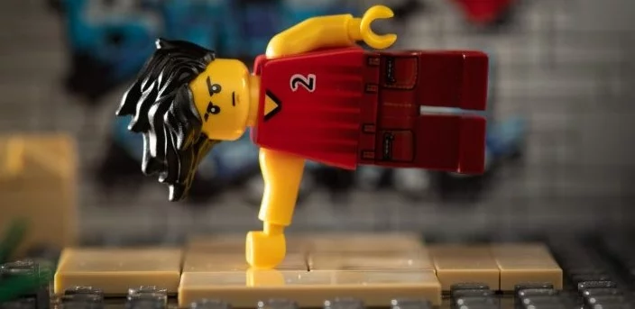
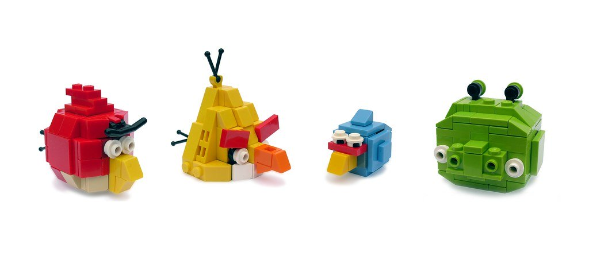

At Home Warm-ups and stretching routines

Warm-up!
why you should always warm up in an article found right here. It doesn’t have to be much though, give it about five minutes to get your muscles active and your heart rate up.
you might know her incredible story ) showing you many beginner options you can use to warm up as well:
Wait there's more!
VIDEO
Jump rope: 2-3 minutes
Jumping jacks: 25 reps
Bodyweight squats: 20 reps
Lunges: 5 reps each leg.
Hip extensions: 10 reps each side
Hip rotations: 5 each leg
Forward leg swings: 10 each leg
Side leg swings: 10 each leg
Push-ups: 10-20 reps
Spider-man steps: 10 reps
Our goal isn’t to tire you out, instead we want to warm you up.
Home Workout #1: Beginner Bodyweight
VIDEO
Beginner Bodyweight Workout article, is as follows:
The above is what we call “circuit training,” with the objective being to run through the workout sequence once, then again, then again.
Home Workout #4: Attack of the Angry Birds

Bodyweight squats
Push-ups
Pull-ups (or inverted rows)
Planks
If you don’t have time to run through the whole sequence, no problem!
Wake up, do 40 jumping jacks to warm up, and then do bodyweight squats.
At lunch, you grab your suitcase (if you’re at work, milk jug if you’re at home) and do inverted rows.
After work, you do another 50 jumping jacks and then do your push-ups.
After dinner, you do your planks while watching TV.
You could even split it up over two days if needed, but the goal would be to do it the whole sequence at once.
Bodyweight squats: 50 reps
Push-ups: 50 reps
Pull-ups: 10 reps
Planks: 3-minute hold
Once you’ve done the complete routine, you have our permission to whip out your phone and play the actual game!
Our Challenges!